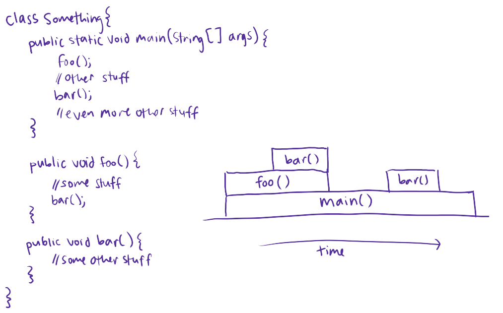

When we have a group of conditional statements, the condition of the `if` statement is evaluated first. If that condition is not true, then the condition for each subsequent `elif` statement (if there are any) is evaluated until one of them evaluates to `true`. If none of these conditions evaluate to `true`, then the code in the `else` block at the end is executed (if it exists).
To me, the initial need to evaluate the condition of any conditional statement, whether it’s`if` or `elif`, kind of creates a subtle sense of “wondering what will happen next”. Will we execute this block of the conditional? Will we not? Each time we have to evaluate a new `elif` statement, it’s almost as if we’re stepping into another level within the conditional, and the anticipation for which block we might execute keeps growing. Then, reaching the `else` block is like “oh, we’re here!”
To represent this musically, I have a motif that will get played each time before the
condition of an `if` or `elif` statement is evaluated:
This is a broken dominant 7th chord. I chose this specific chord because it sounds
“unresolved”, like it’s leading into something else that’s going to happen next. To see
what I mean, listen to this other chord, a major chord, which should sound a lot more
“resolved” in comparison:
A dominant 7th chord naturally resolves (or “leads into”) to the root, like this:
Although that’s not what happens in my program, that’s why the chord that I used should
sound like it’s preparing the way for something after it. The goal is that on its own,
it leaves you with a brief feeling of curiosity, similar to that “subtle sense of wonder”
that I was talking about earlier.
Each time a new `elif` statement is about to be evaluated, the same motif is played.
However, with each consecutive statement, the motif modulates up by a perfect fourth.
This is to represent the fact that we’re going further and further into the conditional,
and each `elif` statement is like another distinct step. This also makes the pitch get
higher and higher, which is consistent with the idea of the increasing anticipation and
unresolved-ness as we have to evaluate more and more statements in the conditional.
The decision to use a perfect fourth was kind of arbitrary, kind of not. I didn’t want to pick a random interval because that could sound really weird and have a lot of clashing pitches. I narrowed it down to either a perfect fourth or a perfect fifth. Fourths and fifths are both adjacent to the root on the Circle of Fifths/Circle of Fourths. This means that only 1 note in the key (but not the chord) would be different than before, which prevents the pitches from immeditely clashing. I chose fourths, and not fifths, just because fifths would be too mainstream. I wanted to be different and slightly edgy, haha.
Finally, when and if we get to the `else` statement (meaning that none of the conditions
were true), we play a different motif. The else statement is different in that we don’t
evaluate a condition. It also leaves nothing to be anticipated, since this is the last
block and we’re definitely going to execute it. So the musical motif reflects this by
resolving and ending on the root.
I came up with an idea for how to represent stack frames sonically based on a picture that Prof Joe Politz drew during a staff meeting in 2018 (@Joe: surprise! I didn’t tell you this). If my memory serves me correctly, it went something like this, for a Java program:
I think that this picture is a pretty cool way to represent the “lifetime” of a program, and I felt like it could be very well-replicated in audio by using harmonics.
A quick crash course in harmonics and timbre:
This is a clean sine wave, with a frequency of 220Hz:
This next clip starts off with the same 220Hz sine wave, and after a while, we add a
440Hz sine wave on top of it:
We can continue to add sine waves, where each new wave is 220Hz more than the previous,
since 220Hz is the base frequency. So 440Hz, then 660Hz, 880Hz, etc. The volume is equalized
after each wave is added because otherwise it would get way too loud and annoying:
Now, you might still be hearing that as a big chord with a bunch of dinstinct notes, instead
of as one tone. I hear that sometimes. It’s because we heard each note as it was added.
Here’s the exact same thing you heard at the end (you’ll have
to take my word for it), after everything was added:
Sounds like a different “color” of sound (but the same pitch!) compared to the clean sine
wave, right? This is one of the building blocks of sound synthesis! Each wave is called a
“harmonic”, and we can synthesize different types of sounds, or "timbres", by changing
the harmonics we include in the sound and the amplitude of each one.
I used harmonics to parallel the concept from the picture I showed above. We add the next harmonic to the overall background sound at the time that a new stack frame is added, and we remove that harmonic at the time that the stack frame is removed.
Looking at it on a deeper level, the picture visually represents the program in a different space in memory at different points in time. Having a different amount of harmonics creates a different timbre for each of these spaces in memory, based on the number of frames on the stack.
Each harmonic has its own pitch, but together, they can be all be different parts of a single sound. Similarly, each stack frame has its own scope, but together, each stack frame below the current one plays a part in shaping the execution of the same program.
I hope that your mind is now blown 🤯